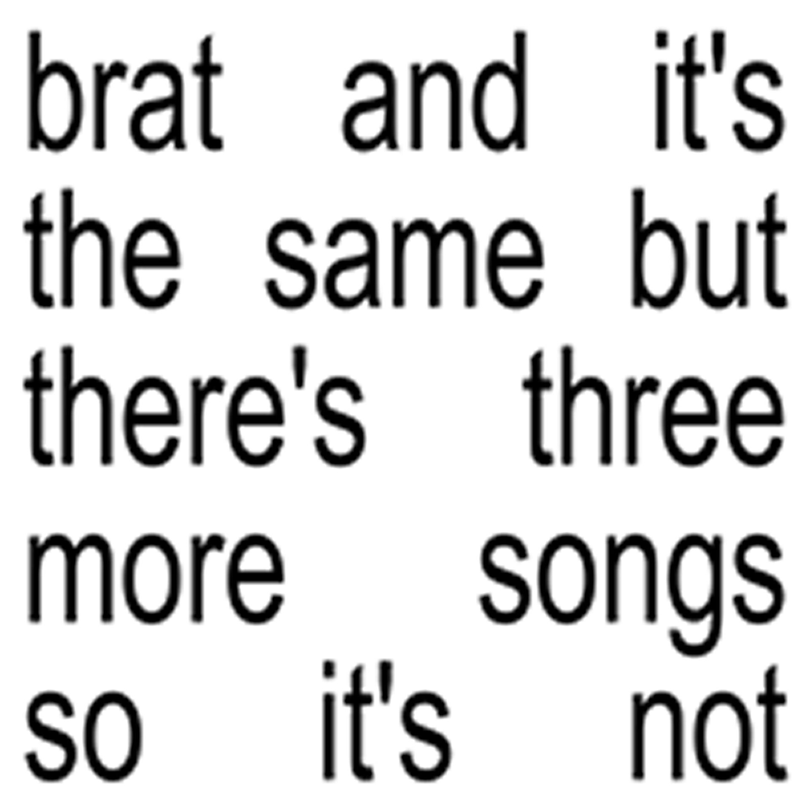
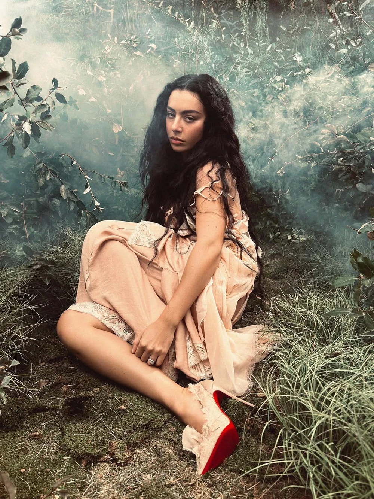
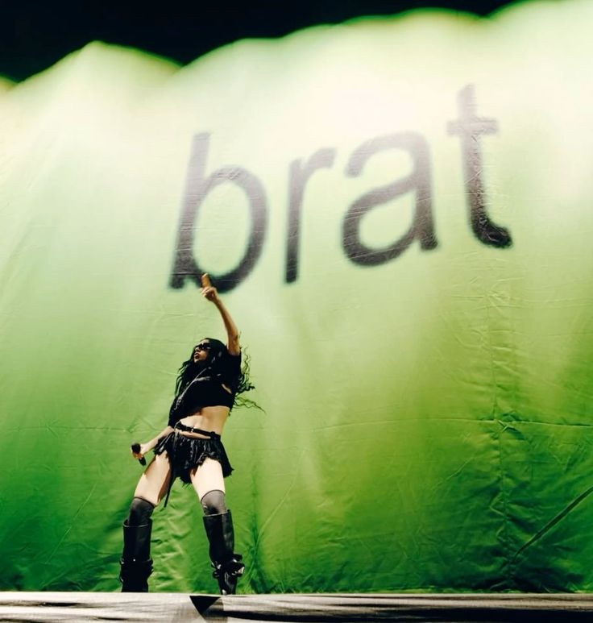
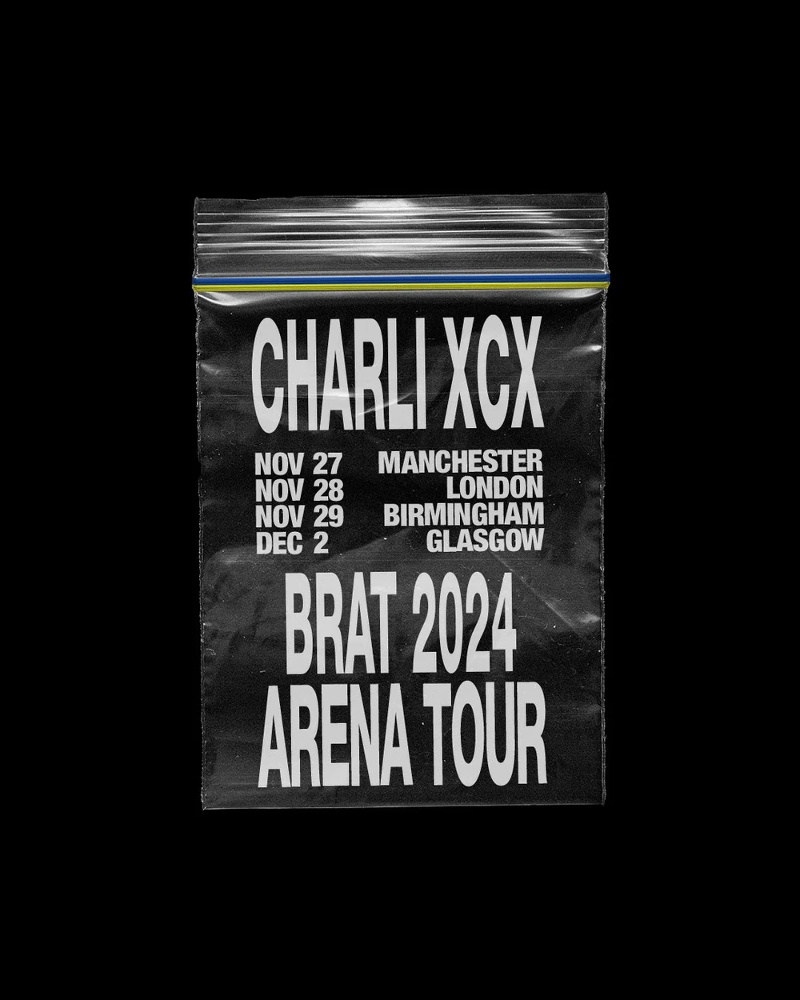
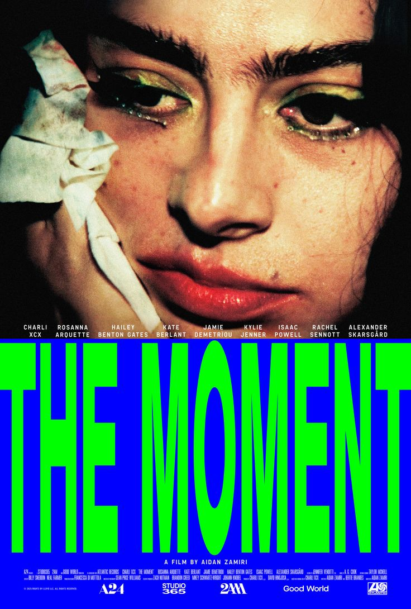

brat standard version album cover

brat deluxe edition album cover
BRAT is the sixth studio album by English singer Charli XCX. It was released on June 7, 2024, via Atlantic Records. The album features contributions from longtime collaborators and producers including A. G. Cook, Finn Keane, Cirkut, and her partner George Daniel, among others. Inspired by 2000s British rave music, the album presents a harsher and more aggressive club sound compared to her previous album Crash (2022). A deluxe version containing three additional tracks was released on June 10, 2024.
| brat album details | |
|---|---|
| Artist | Charli XCX |
| Release Year | 2024 |
| Genre | dance-pop, electropop, electronic dance music, hyperpop |
brat standard version
| No | Song | Producers | Length |
|---|---|---|---|
| 1 | 360 | Cirkut, A. G. Cook, Keane | 2:13 |
| 2 | Club classics | Daniel, Cook | 2:33 |
| 3 | Sympathy is a knife | Keane, Charli XCX | 2:31 |
| 4 | I might say something stupid | Gesaffelstein, Bart Schoudel | 1:49 |
| 5 | Talk talk | Hudson Mohawke, Cook | 2:41 |
| 6 | Von dutch | Keane | 2:44 |
| 7 | Everything is romantic | El Guincho, Jasper Harris, Cook, XCX, Marlonwiththeglasses, Jae Deal | 3:23 |
| 8 | Rewind | Cirkut, Cook | 2:48 |
| 9 | So I | Shave, Cook | 3:31 |
| 10 | Girl, so confusing | Cook | 2:54 |
| 11 | Apple | Daniel, Wiklund, Cook, XCX | 2:31 |
| 12 | B2b | Gesaffelstein, Fedi, Cook, Schoudel | 2:58 |
| 13 | Mean girls | Cook, Hudson Mohawke | 3:09 |
| 14 | I think about it all the time | Cook, Keane | 2:15 |
| 15 | 365 | Cook, Cirkut | 3:23 |
brat and it's the same but there's three more songs so it's not, deluxe version
| No | Song | Producers | Length |
|---|---|---|---|
| 16 | Hello goodbye | Cook | 3:39 |
| 17 | Guess | The Dare | 2:22 |
| 18 | Spring breakers | Cook, Keane, Shave | 2:23 |

Charlotte Emma Aitchison (born 2 August 1992, Cambridge) is an English singer and songwriter, better known by her stage name Charli XCX.


The Brat Tour, also known as the Brat Arena Tour, was the fourth solo concert tour by English singer-songwriter Charli XCX, supporting her sixth studio album Brat (2024). The tour started on November 27, 2024 in Manchester, England, and ended on August 15, 2025 in Gwacheon, South Korea. The Brat Tour is known for its energetic performances and green aesthetic.

"The Moment" is a mockumentary-style film starring pop artist Charli XCX. It explores the challenges she faces after the success of her album BRAT.